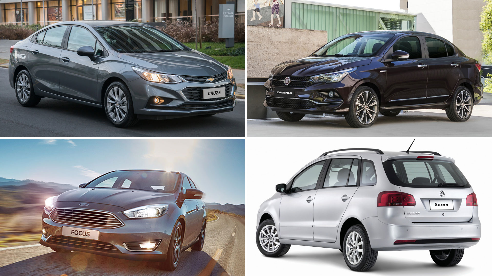
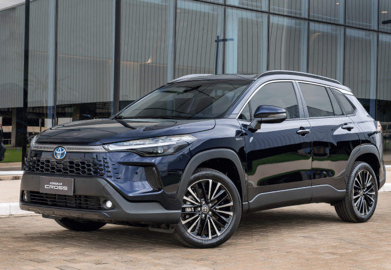
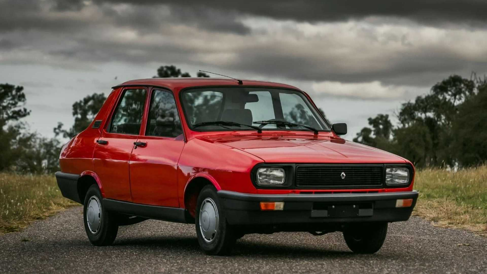

Argentina tiene una relación única con los autos. Desde los clásicos que marcaron generaciones hasta los modelos más modernos, las calles del país son un reflejo del carácter y las necesidades de sus habitantes. Pero, ¿cuáles son los autos que realmente dominan el paisaje urbano y rural? Vamos a descubrirlo.
Tendencias Generales del Mercado Automotriz
El mercado automotriz argentino está profundamente influenciado por factores económicos y culturales. Marcas como Toyota, Volkswagen, Renault, Peugeot y Fiat lideran las ventas año tras año, principalmente gracias a su relación costo-beneficio y al acceso a repuestos.
Además, el segmento de autos usados sigue siendo muy importante. Con la inflación y las fluctuaciones del dólar, muchos argentinos prefieren vehículos de segunda mano, lo que mantiene a modelos más antiguos como el Volkswagen Gol y el Renault Clio circulando por las calles.
Autos Más Comunes en las Calles
Si salís a dar una vuelta por Buenos Aires o cualquier ciudad importante, probablemente te cruces con estos modelos:
1. Compactos y Hatchbacks
Los autos pequeños y económicos son los reyes del asfalto urbano. Modelos como:
- Fiat Cronos: El líder de ventas, fabricado en Córdoba, combina precio accesible con eficiencia.
- Volkswagen Gol: Un clásico indiscutible que sigue vigente.
- Renault Sandero: Amplio y confiable, ideal para la familia.
2. Sedanes
Aunque menos populares en los últimos años, algunos sedanes se mantienen fuertes:
- Toyota Corolla: Confiabilidad japonesa en su máxima expresión.
- Volkswagen Vento: Elegancia y potencia en un paquete accesible para su categoría.
3. Pickups
En el interior del país, las pickups son el vehículo por excelencia. Algunas favoritas incluyen:
- Toyota Hilux: No hay quien le gane en el campo. Resistente, versátil y con excelente valor de reventa.
- Ford Ranger: Un rival directo de la Hilux, especialmente en zonas rurales.
4. SUV Compactas
Este segmento ha crecido mucho en los últimos años:
- Toyota Corolla Cross: Confiabilidad y comodidad en un vehículo alejado del piso.
- Peugeot 2008: Ideal para quienes buscan un poco más de espacio y estilo.
- Jeep Renegade: Perfecto para aventuras, pero también cómodo en la ciudad.
¿Por Qué Son Tan Populares Estos Autos?
La elección de un auto en Argentina no se basa solo en el diseño o la potencia. Factores clave influyen en la popularidad de ciertos modelos:
1. Economía: Autos que consumen poco combustible, son fáciles de mantener y tienen un precio competitivo suelen ser los favoritos.
2. Disponibilidad: La oferta está limitada por restricciones a las importaciones, lo que favorece a las marcas que producen localmente.
3. Cultura: Algunos modelos se han ganado un lugar especial en el corazón de los argentinos por su durabilidad y practicidad.
Autos Icónicos y Nuevas Tendencias
Aunque los compactos y las pickups dominan el mercado, no podemos olvidar los modelos icónicos que marcaron generaciones: el Fiat Uno, el Peugeot 504 o el Renault 12, que todavía se ven en algunos rincones del país.
Por otro lado, hay un creciente interés por los vehículos híbridos y eléctricos, aunque su adopción es lenta debido al costo inicial y la falta de infraestructura de carga. Modelos como el Toyota Corolla Cross Híbrido están empezando a aparecer con mayor frecuencia.
Impacto de la Economía y las Políticas Locales
En un país donde la economía es un factor decisivo, la inflación, el dólar y las políticas de importación afectan directamente las decisiones de compra. Esto ha hecho que las marcas con producción local (como Fiat y Toyota) tengan una ventaja sobre las importadas.
¿Qué Nos Espera en el Futuro?
El mercado argentino se está adaptando a nuevas realidades. Es posible que en los próximos años veamos un aumento en la adopción de autos eléctricos e híbridos, impulsados por iniciativas gubernamentales y un cambio en las prioridades de los consumidores. Sin embargo, el camino aún es largo.
¿Qué Autos Ves Más en Tu Ciudad?
Ahora que repasamos los autos más comunes, te invitamos a compartir tu experiencia. ¿Qué modelos ves más en tu barrio? ¿Cuál es tu auto favorito? ¡Dejanos tu comentario en el mail al pie del blog y sumate a la encuesta!